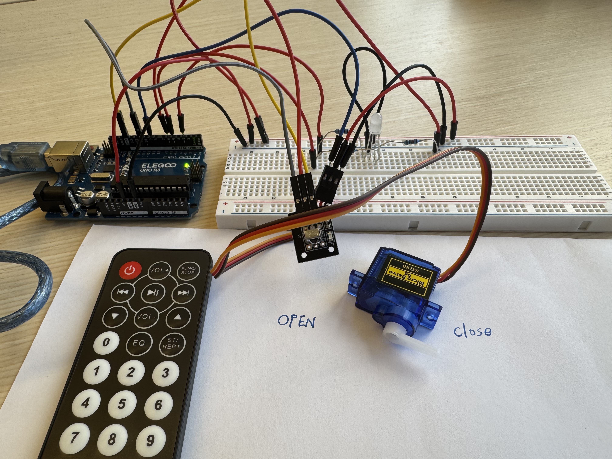
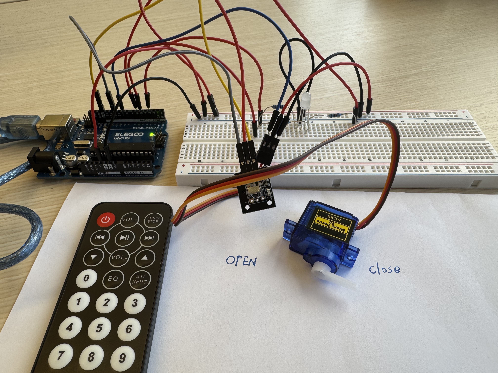
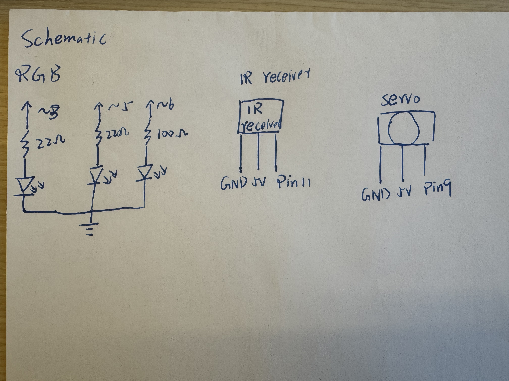
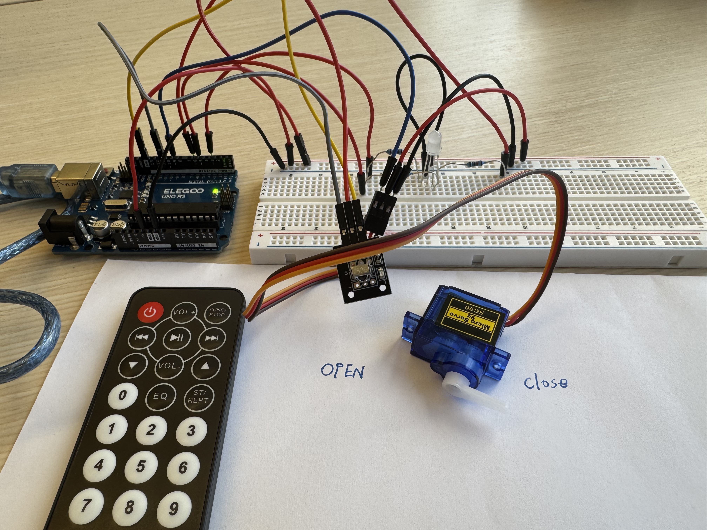
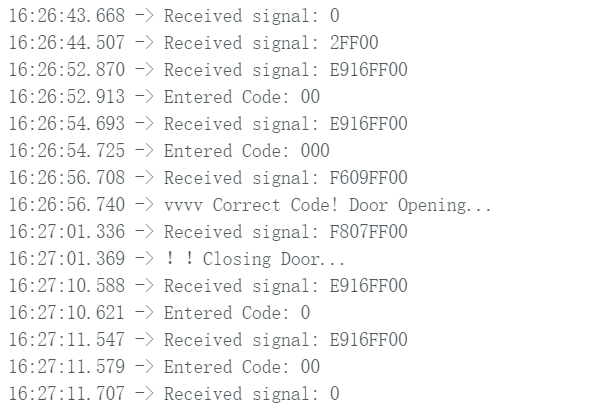
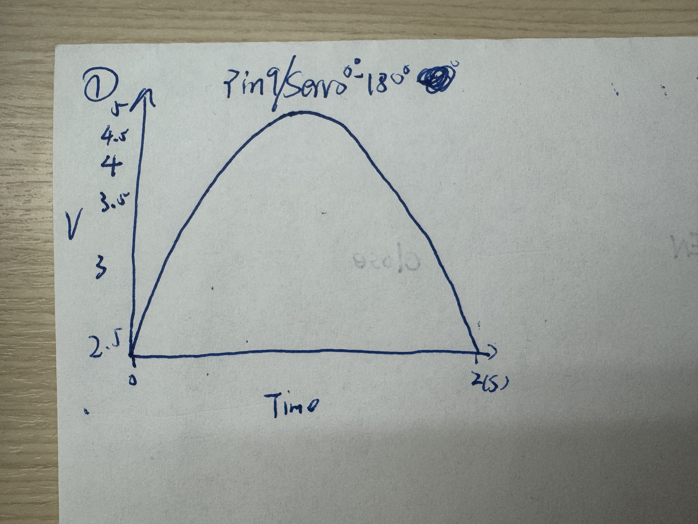

This is my circuit
 

The REG light and servo motor will ingrate with IR reveiver, will depend what button user press on the remote
Here is all the documentation for assignment 4!
This is my schematic
I use 220 ohm resisters for Red and Green LED light, and 100 ohm for blue LED light.
The Red and Greem votage drop is 1.8v, and blue is 3.2 v, so for the equation V = I + R to get the R for red and green is 160 ohm, so I choose 220 ohm for these two lights resisters. for Blue the result is 85 ohm, so I choose 100 ohm to be the resister. For the receiver, I connect witht the Pin 11, and for the servo motor connect with the pin 9
This is my circuit

The REG light and servo motor will ingrate with IR reveiver, will depend what button user press on the remote
This is my firmware
/*
Assignment 4
*/
#include // libraries
#include
int RECV_PIN = 11; // IR receiver pin
int ledPin_R = 3; // red LED pin
int ledPin_G = 5; // green LED pin
int ledPin_B = 6; // blue LED pin
int servoPin = 9; // servo motor pin
Servo myServo; // servo object
String enteredCode = ""; // save the enter code
String correctCode = "000"; // inital password
bool doorOpen = false; // door state
void setup() {
Serial.begin(9600); // setup for the serial monitor
IrReceiver.begin(RECV_PIN, ENABLE_LED_FEEDBACK); // setup for the receiver
// set LED pin output
pinMode(ledPin_R, OUTPUT);
pinMode(ledPin_G, OUTPUT);
pinMode(ledPin_B, OUTPUT);
// setup for the servo, and inital servo at 0 degrees (door closed)
myServo.attach(servoPin);
myServo.write(0);
Serial.println("IR Receiver Ready. Enter the code using the remote.");
}
void loop() {
if (IrReceiver.decode()) {
uint32_t receivedValue = IrReceiver.decodedIRData.decodedRawData;
// blink blue for any button press
digitalWrite(ledPin_R, LOW); // turn off red LED
digitalWrite(ledPin_G, LOW); // turn off green LED
digitalWrite(ledPin_B, HIGH); // blue LED ON
delay(100); // light on 100 millseconds
digitalWrite(ledPin_B, LOW); // blue LED OFF
Serial.print("Received signal: ");
Serial.println(receivedValue, HEX); // print the singal of the receiver
// process different button inputs
if (receivedValue == 0xF609FF00) { // up button (finish code)
if (enteredCode == correctCode) {
Serial.println("vvvv Correct Code! Door Opening...");
digitalWrite(ledPin_G, HIGH); // green ON
myServo.write(180); // open door
delay(3000); // wait 3 seconds
digitalWrite(ledPin_G, LOW); // green OFF
doorOpen = true;
} else {
Serial.println("xxxx Wrong Code! Try again.");
digitalWrite(ledPin_R, HIGH); // red ON
delay(3000); // wait 3 seconds
digitalWrite(ledPin_R, LOW); // red OFF
}
enteredCode = ""; // Reset the code of input
}
else if (receivedValue == 0xF807FF00) { // down button (close door)
if (doorOpen) {
Serial.println("Closing Door...");
digitalWrite(ledPin_G, HIGH); // green ON
delay(3000); // wait 3 seconds
digitalWrite(ledPin_G, LOW); // green OFF
myServo.write(0); // close door
doorOpen = false;
}
}
else if (receivedValue == 0xE916FF00) { // number '0' key
enteredCode += '0'; // add '0' to the entered code
Serial.print("Entered Code: ");
Serial.println(enteredCode); // print the code user press
}
IrReceiver.resume(); // resume receiving next signal
}
}
Feature: I use code to integrate RGB light and servo with IR receiver, user can press the code on the remote, and every press the light will have react, and if user press correct code will make the servo move
This is my output from the serial monitor
the serical monitor show the signal of receive by IR receiver, and also when correct door open, when the code wrong will tell u the code
This is my circuit's operation
.gif)
first I press the code 0 on the remote 3 times, because the '000'is my code for the password door/lock, and after I press the 000, I press the up button, and the RGB light show green means the password is correct, and also the servo turn 180 degree means the lock open. and then I press down button on the remote, the servo turn back to 0 degree means the door close also the light will show greem 3s

Second, I will show when user press wrong code, like I did press the code 00, but the correct code is 000, so after I press 00, and press up button, the led light on red, and the servo didnt move
Additional questions:
Question 1:
Question 2:
int average() {
int val1 = analogRead(A0);
delay(5);
int val2 = analogRead(A0);
delay(5);
int val3 = analogRead(A0);
return (val1 + val2 + val3) / 3; // return the average value
}
if one reading is wrong, the average of three or more readings makes it more stable.
Question 3:
int input() {
int A1 = analogRead(A0); // read sensor (0 - 1023)
// map the value to a smaller range (e.g., 0 - 100 to reduce fluctuations)
int value = map(A1, 0, 1023, 0, 100);
return value; // Return the mapped value
}
it compresses the sensor range, making small changes less noticeable.